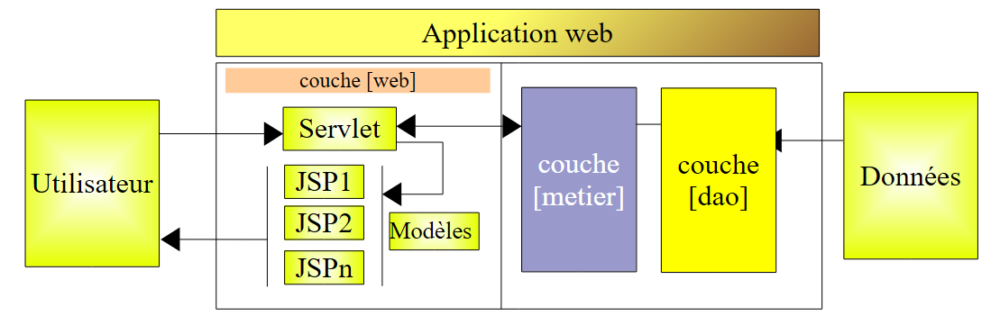
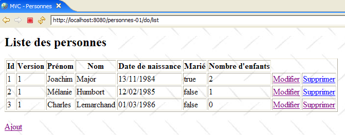
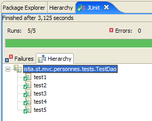
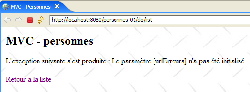
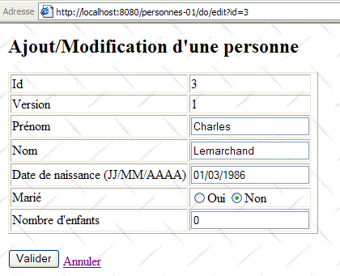

14. Webanwendung MVC in einer 3-Tier-Architektur – Beispiel 1
14.1. Einführung
Bisher haben wir uns auf Beispiele mit pädagogischem Zweck beschränkt. Aus diesem Grund mussten sie einfach gehalten sein. Nun stellen wir eine einfache Anwendung vor, die jedoch umfangreicher ist als alle bisher vorgestellten. Sie zeichnet sich dadurch aus, dass sie alle drei Schichten einer 3-Tier-Architektur nutzt:

Der Leser wird gebeten, die Grundlagen einer Webanwendung MVC in einer 3-Tier-Architektur in Abschnitt 4 noch einmal nachzulesen, falls er sie vergessen hat.
Die Webanwendung, die wir erstellen werden, ermöglicht die Verwaltung einer Personengruppe mit vier Funktionen:
- Liste der Personen in der Gruppe
- Hinzufügen einer Person zur Gruppe
- Änderung einer Person in der Gruppe
- Löschen einer Person aus der Gruppe
Diese vier Grundoperationen entsprechen den vier Grundoperationen einer Datenbanktabelle. Wir werden zwei Versionen dieser Anwendung erstellen:
- In Version 1 wird die Schicht [dao] keine Datenbank verwenden. Die Personen der Gruppe werden in einem einfachen Objekt [ArrayList] gespeichert, das intern von der Schicht [dao] verwaltet wird. So kann der Leser die Anwendung ohne Einschränkungen durch eine Datenbank testen.
- In Version 2 werden wir die Personengruppe in einer Datenbanktabelle ablegen. Wir werden zeigen, dass dies ohne Auswirkungen auf die Webschicht von Version 1 geschieht, die unverändert bleibt.
Die folgenden Screenshots zeigen die Seiten, die die Anwendung mit dem Benutzer austauscht.


 |
 |
14.2. Das Eclipse-Projekt
Das Anwendungsprojekt heißt [personnes-01]:

Dieses Projekt umfasst die drei Schichten der 3-Tier-Architektur der Anwendung:
 |
- Die Schicht [dao] ist im Paket [istia.st.mvc.personnes.dao] enthalten
- Die Schicht [metier] oder [service] ist im Paket [istia.st.mvc.personnes.service] enthalten
- Die Schicht [web] oder [ui] ist im Paket [istia.st.mvc.personnes.web] enthalten
- Das Paket [istia.st.mvc.personnes.entites] enthält die Objekte, die von verschiedenen Schichten gemeinsam genutzt werden
- Das Paket [istia.st.mvc.personnes.tests] enthält die JUnit-Tests der Schichten [dao] und [service]
Wir werden nacheinander die drei Schichten [dao], [service] und [web] untersuchen. Da das Schreiben zu lange dauern und das Lesen vielleicht zu langweilig werden würde, werden wir bei den Erklärungen manchmal etwas kurz fassen – es sei denn, es handelt sich um neue Inhalte.
14.3. Die Darstellung einer Person
Die Anwendung verwaltet eine Gruppe von Personen. Die Screenshots in Abschnitt 14.1 haben einige der Merkmale einer Person gezeigt. Formal werden diese durch die Klasse [Personne] dargestellt:

Die Klasse [Personne] lautet wie folgt:
- Eine Person wird durch folgende Informationen identifiziert:
- ID: eine Nummer, die eine Person eindeutig identifiziert
- Nachname: der Nachname der Person
- Vorname: ihr Vorname
- dateNaissance: ihr Geburtsdatum
- verheiratet: ihr Familienstand (verheiratet oder ledig)
- nbEnfants: die Anzahl ihrer Kinder
- Das Attribut [version] ist ein Attribut, das für die Zwecke der Anwendung künstlich hinzugefügt wurde. Aus objektorientierter Sicht wäre es zweifellos besser gewesen, dieses Attribut in einer von [Personne] abgeleiteten Klasse hinzuzufügen. Seine Notwendigkeit wird deutlich, wenn man Anwendungsfälle der Webanwendung betrachtet. Einer davon ist der folgende:
Zum Zeitpunkt T1 ruft ein Benutzer U1 den Bearbeitungsmodus für eine Person P auf. Zu diesem Zeitpunkt beträgt die Anzahl der Kinder 0. Er ändert diese Zahl auf 1, doch bevor er seine Änderung bestätigt, ruft ein Benutzer mit der ID U2 die Bearbeitungsseite derselben Person P auf. Da U1 seine Änderung noch nicht bestätigt hat, sieht U2 die Anzahl der Kinder als 0 an. U2 setzt den Namen der Person P in Großbuchstaben um. Anschließend bestätigen U1 und U2 ihre Änderungen in dieser Reihenfolge. Die Änderung von U2 setzt sich durch: Der Name wird in Großbuchstaben umgewandelt und die Anzahl der Kinder bleibt bei Null, obwohl U1 glaubt, sie auf 1 geändert zu haben.
Das Konzept der Personenversion hilft uns, dieses Problem zu lösen. Nehmen wir denselben Anwendungsfall:
Zum Zeitpunkt T1 ruft ein Benutzer mit der ID U1 den Bearbeitungsmodus für eine Person P auf. Zu diesem Zeitpunkt beträgt die Anzahl der Kinder 0 und die Version lautet V1. Er ändert die Anzahl der Kinder auf 1, doch bevor er seine Änderung bestätigt, ruft ein Benutzer mit der ID U2 die Bearbeitungsseite derselben Person P auf. Da U1 seine Änderung noch nicht bestätigt hat, sieht U2 die Anzahl der Kinder auf 0 und die Version auf V1. U2 schreibt den Namen der Person P in Großbuchstaben um. Anschließend bestätigen U1 und U2 ihre Änderungen in dieser Reihenfolge. Vor der Bestätigung einer Änderung wird überprüft, ob derjenige, der eine Person P ändert, dieselbe Version besitzt wie die aktuell gespeicherte Person P. Dies ist beim Benutzer U1 der Fall. Seine Änderung wird daher akzeptiert, und die Version der geänderten Person wird von V1 auf V2 geändert, um zu vermerken, dass die Person eine Änderung erfahren hat. Bei der Validierung der Änderung von U2 wird festgestellt, dass er eine Version V1 der Person P besitzt, während deren aktuelle Version V2 lautet. Man kann dem Benutzer U2 dann mitteilen, dass jemand vor ihm tätig war und er von der neuen Version der Person P ausgehen muss. Er wird dies tun, eine Person P der Version V2 abrufen, die nun ein Kind hat, den Namen in Großbuchstaben umwandeln und die Änderung bestätigen. Seine Änderung wird akzeptiert, wenn die gespeicherte Person P noch immer die Version V2 hat. Letztendlich werden die von U1 und U2 vorgenommenen Änderungen berücksichtigt, während im Anwendungsfall ohne Versionsnummer eine der Änderungen verloren gegangen wäre.
- Zeilen 32–40: Ein Konstruktor, der die Felder einer Person initialisieren kann. Das Feld [version] wird weggelassen.
- Zeilen 43–51: Ein Konstruktor, der eine Kopie der als Parameter übergebenen Person erstellt. Man erhält somit zwei Objekte mit identischem Inhalt, auf die jedoch zwei verschiedene Zeiger verweisen.
- Zeile 55: Die Methode [toString] wird neu definiert, um eine Zeichenkette zurückzugeben, die den Status der Person darstellt
14.4. Die Schicht [dao]
Die Schicht [dao] besteht aus den folgenden Klassen und Schnittstellen:

- [IDao] ist die Schnittstelle, die von der Schicht [dao] bereitgestellt wird
- [DaoImpl] ist eine Implementierung davon, bei der die Personengruppe in einem Objekt vom Typ [ArrayList] gekapselt ist
- [DaoException] ist ein Typ unüberprüfter (unchecked) Ausnahmen, die von der Schicht [dao] ausgelöst werden
Die Schnittstelle [IDao] lautet wie folgt:
- Die Schnittstelle verfügt über vier Methoden für die vier Operationen, die man an der Personengruppe durchführen möchte:
- getAll: zum Abrufen einer Sammlung von Personen
- getOne: zum Abrufen einer Person mit einer bestimmten id
- saveOne: zum Hinzufügen einer Person (id=-1) oder zum Ändern einer bestehenden Person (id <> -1)
- deleteOne: zum Löschen einer Person mit einem bestimmten id
Die Ebene [dao] kann Ausnahmen auslösen. Diese sind vom Typ [DaoException] :
- Zeile 3: Die von [RuntimeException] abgeleitete Klasse [DaoException] ist ein unkontrollierter Ausnahmetyp: Der Compiler zwingt uns nicht dazu,
- diesen Ausnahmetyp mit einem try/catch-Block zu behandeln, wenn eine Methode aufgerufen wird, die diese Ausnahme auslösen kann
- in der Signatur einer Methode, die die Ausnahme auslösen könnte, den Marker „throws DaoException“ anzugeben
Diese Vorgehensweise erspart es uns, die Methoden der Schnittstelle [IDao] mit Ausnahmen eines bestimmten Typs zu signieren. Jede Implementierung, die unkontrollierte Ausnahmen auslöst, ist dann zulässig, was der Architektur Flexibilität verleiht.
- Zeile 6: ein Fehlercode. Die Schicht [dao] löst verschiedene Ausnahmen aus, die durch unterschiedliche Fehlercodes gekennzeichnet sind. Auf diese Weise kann die Schicht, die die Ausnahme behandelt, die genaue Ursache des Fehlers ermitteln und entsprechend geeignete Maßnahmen ergreifen. Es gibt weitere Möglichkeiten, um zum gleichen Ergebnis zu gelangen. Eine davon besteht darin, für jede mögliche Fehlerart einen eigenen Ausnahmetyp zu erstellen, zum Beispiel NomManquantException, PrenomManquantException, AgeIncorrectException, ...
- Zeilen 13–16: Der Konstruktor, mit dem eine Ausnahme erstellt werden kann, die durch einen Fehlercode sowie eine Fehlermeldung identifiziert wird.
- Zeilen 8–10: Die Methode, mit der der Code zur Ausnahmebehandlung den Fehlercode abrufen kann.
Die Klasse [DaoImpl] implementiert die Schnittstelle [IDao]:
1 2 3 4 5 6 7 8 9 10 11 12 13 14 15 16 17 18 19 20 21 22 23 24 25 26 27 28 29 30 31 32 33 34 35 36 37 38 39 40 41 42 43 44 45 46 47 48 49 50 51 52 53 54 55 56 57 58 59 60 61 62 63 64 65 66 67 68 69 70 71 72 73 74 75 76 77 78 79 80 81 82 83 84 85 86 87 88 89 90 91 92 93 94 95 96 97 98 99 100 101 102 103 104 105 106 107 108 109 110 111 112 113 114 115 116 117 118 119 120 121 122 123 124 125 126 127 128 129 130 131 132 133 134 135 136 137 138 139 140 141 142 143 144 145 146 147 148 149 150 151 152 153 154 155 156 157 158 159 160 161 162 163 164 165 166 167 168 | |
Wir werden hier nur die Grundzüge dieses Codes erläutern. Auf die heikleren Teile werden wir jedoch etwas näher eingehen.
- Zeile 13: Das Objekt [ArrayList], das die Personengruppe enthält
- Zeile 16: Die ID der zuletzt hinzugefügten Person. Bei jedem neuen Eintrag wird diese ID um 1 erhöht.
Die Klasse [DaoImpl] wird als einziges Exemplar instanziiert. Dies wird als Singleton bezeichnet. Eine Webanwendung bedient ihre Nutzer gleichzeitig. Zu einem bestimmten Zeitpunkt werden mehrere Threads vom Webserver ausgeführt. Diese teilen sich die Singletons:
- das der Schicht [dao]
- das der Schicht [service]
- die der verschiedenen Controller, Datenvalidatoren usw. der Webschicht
Wenn ein Singleton private Felder hat, muss man sich sofort fragen, warum dies der Fall ist. Sind sie gerechtfertigt? Denn sie werden von verschiedenen Threads gemeinsam genutzt. Sind sie schreibgeschützt, stellt dies kein Problem dar, sofern sie zu einem Zeitpunkt initialisiert werden können, zu dem sicher ist, dass nur ein Thread aktiv ist. In der Regel lässt sich dieser Zeitpunkt ermitteln. Es handelt sich um den Start der Webanwendung, solange sie noch keine Clients bedient. Sind die Felder les- und schreibbar, muss eine Synchronisation des Zugriffs auf die Felder eingerichtet werden, da es sonst zu einer Katastrophe kommen kann. Wir werden dieses Problem veranschaulichen, wenn wir die Schicht [dao] testen.
- Die Klasse [DaoImpl] verfügt über keinen Konstruktor. Daher wird ihr Standardkonstruktor verwendet.
- Zeilen 19–38: Die Methode [init] wird bei der Instanziierung des Singletons der Schicht [dao] aufgerufen. Sie erstellt eine Liste mit drei Personen.
- Zeilen 41–43: Implementieren die Methode [getAll] der Schnittstelle [IDao]. Sie gibt eine Referenz auf die Liste der Personen zurück.
- Zeilen 46–55: Implementiert die Methode [getOne] der Schnittstelle [IDao]. Ihr Parameter ist die ID der gesuchten Person.
Um diese abzurufen, wird eine private Methode [getPosition] in den Zeilen 113–126 aufgerufen. Diese Methode gibt die Position der gesuchten Person in der Liste zurück oder -1, wenn die Person nicht gefunden wurde.
Wurde die Person gefunden, gibt die Methode [getOne] (Zeile 51) einen Verweis auf eine Kopie dieser Person zurück und nicht auf die Person selbst. Wenn ein Benutzer eine Person bearbeiten möchte, werden die Informationen zu dieser Person von der Ebene [dao] angefordert und zur Bearbeitung in Form einer Referenz auf ein Objekt [Personne] an die Ebene [web] weitergeleitet. Diese Referenz dient als Eingabecontainer im Änderungsformular. Wenn der Benutzer in der Web-Ebene seine Änderungen absendet, wird der Inhalt des Eingabecontainers geändert. Ist der Container eine Referenz auf die eigentliche Person aus der Ebene [ArrayList] der Ebene [dao], wird diese geändert, obwohl die Änderungen den Schichten [service] und [dao] noch nicht übermittelt wurden. Letztere ist als einzige berechtigt, die Personenliste zu verwalten. Daher muss die Webschicht mit einer Kopie der zu ändernden Person arbeiten. Hier liefert die Schicht [dao] diese Kopie.
Wird die gesuchte Person nicht gefunden, wird eine Ausnahme vom Typ [DaoException] mit dem Fehlercode 2 ausgelöst (Zeile 53).
- Zeilen 94–104: Implementieren die Methode [deleteOne] der Schnittstelle [IDao]. Ihr Parameter ist die ID der zu löschenden Person. Wenn die zu löschende Person nicht existiert, wird eine Ausnahme vom Typ [DaoException] mit dem Fehlercode 2 ausgelöst.
- Zeilen 58–91: Implementiert die Methode [saveOne] der Schnittstelle [IDao]. Ihr Parameter ist ein Objekt vom Typ [Personne]. Wenn dieses Objekt eine ID von -1 hat, handelt es sich um das Hinzufügen einer Person. Andernfalls wird die Person in der Liste mit dieser ID anhand der Werte des Parameters geändert.
- Zeile 60: Die Gültigkeit des Parameters [Personne] wird durch eine private Methode [check] überprüft, die in den Zeilen 129–155 definiert ist. Diese Methode führt grundlegende Überprüfungen des Werts der verschiedenen Felder von [Personne] durch. Jedes Mal, wenn eine Anomalie festgestellt wird, wird eine [DaoException] mit einem spezifischen Fehlercode ausgelöst. Da die Methode [saveOne] diese Ausnahme nicht behandelt, wird sie an die aufrufende Methode weitergeleitet.
- Zeile 62: Wenn der Parameter [Personne] die ID -1 hat, handelt es sich um einen Neuzugang. Das Objekt [Personne] wird der internen Personenliste hinzugefügt (Zeile 66), mit der ersten verfügbaren ID (Zeile 64) und einer Versionsnummer von 1 (Zeile 65).
- Wenn der Parameter [Personne] einen Wert für [id] ungleich -1 hat, handelt es sich um eine Änderung der Person in der internen Liste, die diesen [id]-Wert besitzt. Zunächst wird geprüft (Zeilen 70–75), ob die zu ändernde Person existiert. Ist dies nicht der Fall, wird eine Ausnahme vom Typ [DaoException] mit dem Fehlercode 2 ausgelöst.
- Ist die Person vorhanden, wird überprüft, ob ihre aktuelle Version mit der des Parameters [Personne] übereinstimmt, der die am Original vorzunehmenden Änderungen enthält. Ist dies nicht der Fall, bedeutet dies, dass derjenige, der die Änderung an der Person vornehmen möchte, nicht über die neueste Version verfügt. Dies wird ihm mitgeteilt, indem eine Ausnahme vom Typ [DaoException] mit dem Fehlercode 3 ausgelöst wird (Zeilen 79–80).
- Wenn alles gut geht, werden die Änderungen am Originaldatensatz der Person vorgenommen (Zeilen 85–90).
Es ist offensichtlich, dass diese Methode synchronisiert werden muss. Beispielsweise könnte die Person zwischen dem Zeitpunkt, an dem überprüft wird, ob die zu ändernde Person tatsächlich vorhanden ist, und dem Zeitpunkt, an dem die Änderung vorgenommen wird, von jemand anderem aus der Liste gelöscht worden sein. Die Methode sollte daher als [synchronized] deklariert werden, um sicherzustellen, dass sie jeweils nur von einem Thread ausgeführt wird. Das Gleiche gilt für die anderen Methoden der Schnittstelle [IDao]. Wir verzichten jedoch darauf und verlagern diese Synchronisation lieber in die Schicht [service]. Um die Synchronisationsprobleme deutlich zu machen, werden wir bei den Tests der Schicht [dao] die Ausführung von [saveOne] für 10 ms (Zeile 83) unterbrechen – und zwar zwischen dem Zeitpunkt, zu dem wir wissen, dass wir die Änderung vornehmen können, und dem Zeitpunkt, zu dem wir sie tatsächlich vornehmen. Der Thread, der [saveOne] ausführt, wird dann die Prozessorausführung an einen anderen Thread abgeben. Auf diese Weise erhöhen wir die Wahrscheinlichkeit, dass Zugriffskonflikte bei der Personenliste auftreten.
14.5. Tests der Schicht [dao]
Für die Schicht [dao] wird ein Test JUnit geschrieben:
 |  |
[TestDao] ist der Test JUnit. Um Probleme beim gleichzeitigen Zugriff auf die Personenliste aufzuzeigen, werden Threads vom Typ [ThreadDaoMajEnfants] erstellt. Diese haben die Aufgabe, die Anzahl der Kinder einer bestimmten Person um 1 zu erhöhen.
[TestDao] umfasst fünf Tests von [test1] bis [test5]. Wir stellen hier nur zwei davon vor; der Leser ist eingeladen, die übrigen im Quellcode zu diesem Artikel zu entdecken.
- Zeile 9: Verweis auf die Implementierung der getesteten Schicht [dao]
- Zeilen 12–15: Der Testkonstruktor JUnit. Er erstellt eine Instanz vom Typ [DaoImpl] der zu testenden Schicht [dao] und initialisiert sie.
Die Methode [test1] testet die vier Methoden der Schnittstelle [IDao] wie folgt:
- Zeile 3: Die Liste der Personen wird angefordert
- Zeile 6: Diese wird angezeigt
[1,1,Joachim,Major,13/01/1984,true,2]
[2,1,Mélanie,Humbort,12/01/1985,false,1]
[3,1,Charles,Lemarchand,01/01/1986,false,0]
Anschließend fügt der Test eine Person hinzu, ändert sie und löscht sie. Damit werden alle vier Methoden der Schnittstelle [IDao] verwendet.
- Zeilen 8–10: Es wird eine neue Person hinzugefügt (ID = -1).
- Zeile 11: Die ID der hinzugefügten Person wird abgerufen, da ihr durch das Hinzufügen eine ID zugewiesen wurde. Zuvor hatte sie keine.
- Zeilen 13–14: Von der Schicht [dao] wird eine Kopie der soeben hinzugefügten Person angefordert. Man muss bedenken, dass die Ebene [dao] eine Ausnahme auslöst, wenn die angeforderte Person nicht gefunden wird. In diesem Fall kommt es in Zeile 13 zu einem Absturz. Dieser Fall hätte sauberer gehandhabt werden können. In Zeile 14 wird der Name der gefundenen Person überprüft.
- Zeilen 16–17: Dieser Name wird geändert und die Schicht [dao] wird aufgefordert, die Änderungen zu speichern.
- Zeilen 19–20: Man fordert von der Ebene [dao] eine Kopie der soeben hinzugefügten Person an und überprüft deren neuen Namen.
- Zeile 22: Die zu Beginn des Tests hinzugefügte Person wird gelöscht.
- Zeilen 23–34: Von der Ebene [dao] wird eine Kopie der soeben gelöschten Person angefordert. Es muss eine [DaoException] mit Code 2 zurückgegeben werden.
- Zeilen 36–37: Die Liste der Personen wird erneut angefordert. Es sollte dieselbe Liste wie zu Beginn des Tests zurückgegeben werden.
Die Methode [test4] soll Probleme beim gleichzeitigen Zugriff auf die Methoden der Schicht [dao] aufzeigen. Zur Erinnerung: Diese wurden nicht synchronisiert. Der Testcode lautet wie folgt:
- Zeilen 3–6: Eine Person P ohne Kinder wird zur Liste hinzugefügt. Ihr [id] wird notiert (Zeile 6).
- Zeilen 7–13: Es werden N Threads gestartet. Jeder von ihnen erhöht die Anzahl der Kinder der Person P um 1. Am Ende soll die Person P N Kinder haben.
- Zeilen 15–17: Die Methode [test4], die die N Threads gestartet hat, wartet, bis diese ihre Arbeit beendet haben, bevor sie die neue Anzahl der Kinder der Person P abfragt.
- Zeilen 18–21: Die Person P wird abgerufen und überprüft, ob ihre Anzahl an Kindern N beträgt.
- Zeilen 22–35: Die Person P wird gelöscht, anschließend wird überprüft, ob sie nicht mehr in der Liste vorhanden ist.
In Zeile 11 sieht man, dass die Threads vom Typ [ThreadDaoMajEnfants] sind. Der Konstruktor dieses Typs hat drei Parameter:
- den Namen des Threads, um ihn anhand von Protokollen nachverfolgen zu können
- eine Referenz auf die Schicht [dao], damit der Thread darauf zugreifen kann
- die ID der Person, an der der Thread arbeiten soll
Der Typ [ThreadDaoMajEnfants] lautet wie folgt:
- Zeile 9: [ThreadDaoMajEnfants] ist tatsächlich ein Thread
- Zeilen 18–22: Der Konstruktor, der den Thread mit drei Informationen initialisiert
- der Name „[name]“, der dem Thread zugewiesen wurde
- eine Referenz [dao] auf die Schicht [dao]. Es ist zu beachten, dass wir erneut mit dem Typ der Schnittstelle [IDao] arbeiten und nicht mit dem der Implementierung [DaoImpl].
- die ID [id] der Person, an der der Thread arbeiten soll
Wenn [test4] einen Thread [ThreadDaoMajEnfants] startet (Zeile 12 von test4), wird dessen Methode [run] (Zeile 25) ausgeführt:
- Zeilen 78–81: Die private Methode [suivi] ermöglicht die Erstellung von Bildschirmprotokollen. Die Methode [run] nutzt diese, um die Ausführung des Threads zu verfolgen.
- Der Thread versucht, die Anzahl der Kinder der Person P mit der Kennung [id] um 1 zu erhöhen. Diese Aktualisierung kann mehrere Versuche erfordern. Nehmen wir zwei Threads [TH1] und [TH2]. [TH1] fordert von der Ebene [dao] eine Kopie der Person P an. Er erhält sie und stellt fest, dass sie die Version V1 hat. [TH1] wird unterbrochen. [TH2], das ihm folgte, tut dasselbe und erhält dieselbe Version V1 der Person P. [TH2] wird unterbrochen. [TH2] übernimmt wieder die Kontrolle, erhöht die Anzahl der Kinder von P und speichert seine Änderungen. Wir wissen, dass diese nun gespeichert sind und dass die Version von P auf V2 wechselt. [TH1] hat seine Arbeit beendet. [TH2] übernimmt wieder die Kontrolle und verfährt ebenso. Seine Aktualisierung von P wird abgelehnt, da er eine Kopie von P mit der Version V1 besitzt, während das Original P nun die Version V2 hat. [TH2] muss daher den gesamten Zyklus von [lecture -> mise à jour -> sauvegarde] wiederholen. Aus diesem Grund finden wir die Schleife in den Zeilen 32–72. In dieser fordert der Thread:
- eine Kopie der zu ändernden Person P an (Zeile 34)
- wartet 10 ms (Zeile 43). Dies ist künstlich und zielt darauf ab, den Thread zwischen dem Auslesen der Person P und ihrer tatsächlichen Aktualisierung in der Personenliste zu unterbrechen, um die Wahrscheinlichkeit von Konflikten zu erhöhen.
- erhöht die Anzahl der Kinder von P (Zeile 54) und speichert P (Zeile 56). Verfügt der Thread nicht über die richtige Version von P, wird von der Schicht [dao] eine Ausnahme ausgelöst. Anschließend wird der Ausnahmecode abgerufen (Zeile 61), um zu überprüfen, ob es sich tatsächlich um den Code 3 handelt (falsche Version von P). Ist dies nicht der Fall, wird die Ausnahme an die aufrufende Methode weitergeleitet, letztendlich an die Testmethode [test4]. Wenn die Ausnahme mit Code 3 auftritt, wird der Zyklus [lecture -> mise à jour -> sauvegarde] erneut durchlaufen. Tritt keine Ausnahme auf, wurde die Aktualisierung durchgeführt und die Arbeit des Threads ist beendet.
Was ergeben die Tests?
In der ersten getesteten Konfiguration:
- wird die Warteanweisung in der Methode [saveOne] von [DaoImpl] auskommentiert (Zeile 83, Abschnitt 14.4).
- Die Methode [test4] erstellt 100 Threads (Zeile 8, Abschnitt 14.5).
Es ergeben sich folgende Ergebnisse:

Alle fünf Tests wurden erfolgreich abgeschlossen.
In der zweiten getesteten Konfiguration:
- wird die Warteanweisung in der Methode [saveOne] von [DaoImpl] (Zeile 83, Abschnitt 14.4) auskommentiert.
- Die Methode [test4] erstellt zwei Threads (Zeile 8, Abschnitt 14.5).
Es ergeben sich folgende Ergebnisse:
 |  |
Der Test [test4] ist fehlgeschlagen. Es wurden zwei Threads erstellt, die jeweils die Anzahl der Kinder einer Person P, die zu Beginn 0 Kinder hatte, um 1 erhöhen sollten. Nach der Ausführung der beiden Threads wurden also 2 Kinder erwartet, doch es gibt nur eines.
Sehen wir uns die Bildschirmprotokolle von [test4] an, um zu verstehen, was passiert ist:
- Zeile 1: Thread Nr. 0 beginnt seine Arbeit
- Zeile 2: Er hat eine Kopie der Person P abgerufen und stellt fest, dass die Anzahl ihrer Kinder 0 beträgt
- Zeile 3: Er stößt auf den [Thread.sleep(10)] seiner Methode [run] und hält daher bei der Zeit [1145536368171] (ms) an
- Zeile 4: Thread Nr. 1 erhält nun die Prozessorsteuerung zurück und beginnt mit seiner Arbeit
- Zeile 5: Er hat eine Kopie der Person P abgerufen und stellt fest, dass diese 0 Kinder hat
- Zeile 6: Er stößt auf den Zeitpunkt [Thread.sleep(10)] seiner Methode [run] und hält daher an
- Zeile 7: Thread Nr. 0 erhält die Prozessorsteuerung zum Zeitpunkt [1145536368187] (ms), c.a.d – 16 ms, nachdem er sie verloren hatte.
- Zeile 8: Gleiches gilt für Thread Nr. 1
- Zeile 9: Thread Nr. 0 hat seine Aktualisierung vorgenommen und die Anzahl der untergeordneten Threads auf 1 gesetzt
- Zeile 10: Thread Nr. 1 hat dasselbe getan
Die Frage ist, warum Thread Nr. 1 seine Aktualisierung vornehmen konnte, obwohl er normalerweise nicht mehr über die korrekte Version der Person P verfügte, die gerade von Thread Nr. 0 aktualisiert worden war.
Zunächst fällt eine Anomalie zwischen den Zeilen 7 und 8 auf: Es scheint, als hätte Thread Nr. 0 zwischen diesen beiden Zeilen die Prozessorsteuerung an Thread Nr. 1 abgegeben. Was tat er in diesem Moment? Er führte die Methode [saveOne] der Schicht [dao] aus. Diese hat das folgende Grundgerüst (siehe Abschnitt 14.4):
- Thread Nr. 0 führte [saveOne] aus und gelangte bis zur Zeile 8, wo er den Prozessor freigeben musste. In der Zwischenzeit las er die Version der Person P aus, und diese war 1, da die Person P noch nicht aktualisiert worden war.
- Da der Prozessor nun frei war, übernahm Thread Nr. 1 die Kontrolle. Dieser führte seinerseits [saveOne] aus und gelangte bis zur Zeile 8, wo er gezwungen war, den Prozessor freizugeben. In der Zwischenzeit las er die Version von Person P aus, und diese lautete 1, da Person P immer noch nicht aktualisiert worden war.
- Da der Prozessor nun frei war, übernahm Thread Nr. 0 die Kontrolle. Ab Zeile 9 führte er seine Aktualisierung durch und setzte die Anzahl der Kinder auf 1. Dann endete die Methode [run] des Threads Nr. 0, und der Thread gab das Protokoll aus, das besagte, dass er die Anzahl der Kinder auf 1 gesetzt hatte (Zeile 9).
- Da der Prozessor nun frei war, übernahm Thread Nr. 1 die Kontrolle. Ab Zeile 9 führte er seine Aktualisierung durch und setzte die Anzahl der Kinder auf 1. Warum 1? Weil er eine Kopie von P mit einer Anzahl von Kindern gleich 0 besitzt. Das geht aus dem Log (Zeile 5) hervor. Dann wurde die Methode „[run]“ von Thread Nr. 1 beendet, und der Thread gab den Log-Eintrag aus, der besagte, dass er die Anzahl der Kinder auf 1 gesetzt hatte (Zeile 10).
Wo liegt das Problem? Es liegt daran, dass Thread Nr. 0 keine Zeit hatte, seine Änderung zu speichern und somit die Version der Person P zu ändern, bevor Thread Nr. 1 versuchte, diese Version zu lesen, um festzustellen, ob sich die Person P geändert hatte. Dieser Fall ist zwar unwahrscheinlich, aber nicht unmöglich. Es war notwendig, Thread Nr. 0 dazu zu zwingen, die Prozessorauslastung zu verlieren, damit dieser Fall bei nur zwei Threads auftrat. Ohne diesen Kunstgriff war es in der vorherigen Konfiguration nicht gelungen, denselben Fall bei 100 Threads zu reproduzieren. Der Test [test4] war erfolgreich verlaufen.
Wie lautet die Lösung? Es gibt zweifellos mehrere. Eine davon, die einfach umzusetzen ist, besteht darin, die Methode [saveOne] zu synchronisieren:
public synchronized void saveOne(Personne personne)
Das Schlüsselwort [synchronized] stellt sicher, dass jeweils nur ein Thread die Methode ausführen kann. Somit darf Thread Nr. 1 die Methode [saveOne] erst dann ausführen, wenn Thread Nr. 0 diese verlassen hat. So ist sichergestellt, dass die Version der Person P geändert wurde, wenn Thread Nr. 1 in [saveOne] eintritt. Seine Aktualisierung wird dann abgelehnt, da er nicht über die richtige Version von P verfügt.
Es sind die vier Methoden der Schicht [dao], die synchronisiert werden müssten. Wir beschließen jedoch, diese Schicht so zu belassen, wie sie beschrieben wurde, und die Synchronisation auf die Schicht [service] zu verlagern. Dafür gibt es mehrere Gründe:
- Wir gehen davon aus, dass der Zugriff auf die Schicht [dao] immer über eine Schicht [service] erfolgt. Dies ist in unserer Webanwendung der Fall.
- Es kann erforderlich sein, den Zugriff auf die Methoden der Schicht [service] aus anderen Gründen zu synchronisieren als denen, die uns dazu veranlassen würden, die Methoden der Schicht [dao] zu synchronisieren. In diesem Fall ist es nicht erforderlich, die Methoden der Schicht [dao] zu synchronisieren. Wenn sichergestellt ist, dass:
- jeder Zugriff auf die Schicht [dao] über die Schicht [service] erfolgt
- und jeweils nur ein Thread die Schicht [service] nutzt
dann ist gewährleistet, dass die Methoden der Schicht [dao] nicht von zwei Threads gleichzeitig ausgeführt werden.
Nun betrachten wir die Schicht [service].
14.6. Die Schicht [service]
Die Schicht [service] besteht aus den folgenden Klassen und Schnittstellen:

- [IService] ist die Schnittstelle, die von der Schicht [dao] bereitgestellt wird
- [ServiceImpl] ist eine Implementierung davon
Die Schnittstelle [IService] lautet wie folgt:
Sie ist identisch mit der Schnittstelle [IDao].
Die Implementierung [ServiceImpl] der Schnittstelle [IService] lautet wie folgt:
- Zeilen 10–19: Das Attribut [IDao dao] ist eine Referenz auf die Schicht [dao]. Es wird von Spring IoC initialisiert.
- Zeilen 22–24: Implementierung der Methode [getAll] der Schnittstelle [IService]. Die Methode leitet die Anfrage lediglich an die Schicht [dao] weiter.
- Zeilen 27–29: Implementierung der Methode [getOne] der Schnittstelle [IService]. Die Methode leitet die Anfrage lediglich an die Schicht [dao] weiter.
- Zeilen 32–34: Implementierung der Methode [saveOne] der Schnittstelle [IService]. Die Methode leitet die Anfrage lediglich an die Schicht [dao] weiter.
- Zeilen 37–39: Implementierung der Methode [deleteOne] der Schnittstelle [IService]. Die Methode leitet die Anfrage lediglich an die Schicht [dao] weiter.
- Alle Methoden sind synchronisiert (Schlüsselwort „synchronized“), wodurch sichergestellt wird, dass jeweils nur ein Thread die Schicht [service] und damit auch die Schicht [dao] nutzen kann.
14.7. Tests der Schicht [service]
Für die Schicht [service] wird ein Test JUnit geschrieben:
|  |
[TestService] ist der Test JUnit. Die durchgeführten Tests sind exakt identisch mit denen, die für die Schicht [dao] durchgeführt wurden. Das Grundgerüst von [TestService] sieht wie folgt aus:
- Zeile 9: Die getestete Schicht [service] vom Typ [ServiceImpl].
- Zeilen 11–15: Der Testgenerator JUnit erstellt eine Instanz der zu testenden Schicht [service] (Zeile 12), erstellt eine Instanz der Schicht [dao] (Zeile 13) und weist die Schicht [service] an, diese Schicht [dao] zu verwenden (Zeile 14).
Die Methode [test1] testet die vier Methoden der Schnittstelle [IService] auf dieselbe Weise wie die gleichnamige Testmethode der Schicht [dao]. Der Unterschied besteht lediglich darin, dass auf die Schicht [service] (Zeilen 25, 32, 35) statt auf die Schicht [dao] zugegriffen wird.
Die Methode [test4] soll Probleme beim gleichzeitigen Zugriff auf die Methoden der Schicht [service] aufdecken. Auch hier ist sie identisch mit der Testmethode [test4] der Schicht [dao]. Es gibt jedoch einige Details, die sich ändern:
- Es wird die Schicht [service] anstelle der Schicht [dao] aufgerufen (Zeile 55)
- den Threads wird eine Referenz auf die Schicht [service] anstelle der Schicht [dao] übergeben (Zeile 61)
Der Typ [ThreadServiceMajEnfants] ist ebenfalls nahezu identisch mit dem Typ [ThreadDaoMajEnfants], mit dem einzigen Unterschied, dass er mit der Schicht [service] und nicht mit der Schicht [dao] arbeitet:
- Zeile 12: Der Thread arbeitet mit der Ebene [service]
Wir führen die Tests mit der Konfiguration durch, die bei der Ebene [dao] Probleme verursacht hat:
- Wir heben die Auskommentierung der Warteanweisung in der Methode [saveOne] von [DaoImpl] auf (Zeile 83, Abschnitt 14.4).
- Die Methode [test4] erstellt 100 Threads (Zeile 65, Abschnitt 14.7).
Die folgenden Ergebnisse wurden erzielt:
 |
Die Synchronisation der Methoden der Schicht [service] hat den Erfolg des Tests [test4] ermöglicht.
14.8. Die Schicht [web]
Zur Erinnerung: Die 3-Tier-Architektur unserer Anwendung sieht wie folgt aus:
 |
Die Schicht [web] stellt dem Benutzer Bildschirme zur Verfügung, über die er die Personengruppe verwalten kann:
- Liste der Personen in der Gruppe
- Hinzufügen einer Person zur Gruppe
- Änderung einer Person in der Gruppe
- Löschen einer Person aus der Gruppe
Dazu stützt sie sich auf die Schicht [service], die ihrerseits die Schicht [dao] aufruft. Die von der Schicht [web] verwalteten Bildschirmbilder haben wir bereits vorgestellt (Abschnitt 14.1). Zur Beschreibung der Webschicht werden wir nacheinander Folgendes vorstellen:
- ihre Konfiguration
- ihre Ansichten
- ihren Controller
- einige Tests
14.8.1. Konfiguration der Webanwendung
Das Eclipse-Projekt der Anwendung lautet wie folgt:

- Im Paket [istia.st.mvc.personnes.web] befindet sich der Controller [Application].
- Die Seiten JSP / JSTL befinden sich in [WEB-INF/vues].
- Der Ordner [lib] enthält die für die Anwendung erforderlichen Archive von Drittanbietern. Diese sind im Ordner [Web App Libraries] zu finden.
[web.xml]
Die Datei [web.xml] wird vom Webserver zum Laden der Anwendung verwendet. Ihr Inhalt lautet wie folgt:
<?xml version="1.0" encoding="UTF-8"?>
<web-app id="WebApp_ID" version="2.4"
xmlns="http://java.sun.com/xml/ns/j2ee"
xmlns:xsi="http://www.w3.org/2001/XMLSchema-instance"
xsi:schemaLocation="http://java.sun.com/xml/ns/j2ee http://java.sun.com/xml/ns/j2ee/web-app_2_4.xsd">
<display-name>mvc-personnes-01</display-name>
<!-- ServletPersonne -->
<servlet>
<servlet-name>personnes</servlet-name>
<servlet-class>
istia.st.mvc.personnes.web.Application
</servlet-class>
<init-param>
<param-name>urlEdit</param-name>
<param-value>/WEB-INF/vues/edit.jsp</param-value>
</init-param>
<init-param>
<param-name>urlErreurs</param-name>
<param-value>/WEB-INF/vues/erreurs.jsp</param-value>
</init-param>
<init-param>
<param-name>urlList</param-name>
<param-value>/WEB-INF/vues/list.jsp</param-value>
</init-param>
</servlet>
<!-- Zuordnung von ServletPersonne-->
<servlet-mapping>
<servlet-name>personnes</servlet-name>
<url-pattern>/do/*</url-pattern>
</servlet-mapping>
<!-- Startseiten -->
<welcome-file-list>
<welcome-file>index.jsp</welcome-file>
</welcome-file-list>
<!-- Seite für unerwartete Fehler -->
<error-page>
<exception-type>java.lang.Exception</exception-type>
<location>/WEB-INF/vues/exception.jsp</location>
</error-page>
</web-app>
- Zeilen 27–30: Die URLs [/do/*] werden vom Servlet [personnes] verarbeitet
- Zeilen 9–12: Das Servlet [personnes] ist eine Instanz der Klasse [Application], eine Klasse, die wir erstellen werden.
- Zeilen 13–24: Hier werden drei Parameter [urlList, urlEdit, urlErreurs] definiert, die die URLs der Seiten JSP der Ansichten [list, edit, erreurs] identifizieren.
- Zeilen 32–34: Die Anwendung verfügt über eine Standard-Startseite [index.jsp], die sich im Stammverzeichnis des Webanwendungsordners befindet.
- Zeilen 36–39: Die Anwendung verfügt über eine Standard-Fehlerseite, die angezeigt wird, wenn der Webserver eine von der Anwendung nicht behandelte Ausnahme abfängt.
- Zeile 37: Das Tag <exception-type> gibt den Ausnahmetyp an, der von der Direktive <error-page> behandelt wird, hier den Typ [java.lang.Exception] und davon abgeleitete Typen, also alle Ausnahmen.
- Zeile 38: Das Tag <location> gibt die Seite JSP an, die angezeigt werden soll, wenn eine Ausnahme des durch <exception-type> definierten Typs auftritt. Die aufgetretene Ausnahme ist auf dieser Seite in einem Objekt namens „exception“ verfügbar, sofern die Seite die folgende Anweisung enthält:
<%@ page isErrorPage="true" %>
- (Fortsetzung)
- Wenn <exception-type> den Typ T1 angibt und eine Ausnahme vom Typ T2, die nicht von T1 abgeleitet ist, an den Webserver weitergeleitet wird, sendet dieser dem Client eine proprietäre Ausnahmeseite, die in der Regel wenig benutzerfreundlich ist. Daher ist das <error-page>-Tag in der Datei [web.xml] von Bedeutung.
[index.jsp]
Diese Seite wird angezeigt, wenn ein Benutzer den Anwendungskontext direkt aufruft, ohne eine URL anzugeben, c.a.d. Hier [/personnes-01]. Ihr Inhalt lautet wie folgt:
<%@ page language="java" pageEncoding="ISO-8859-1" contentType="text/html;charset=ISO-8859-1"%>
<%@ taglib uri="/WEB-INF/c.tld" prefix="c" %>
<c:redirect url="/do/list"/>
[index.jsp] leitet den Client zur URL [/do/list] weiter. Diese URL zeigt die Liste der Personen in der Gruppe an.
14.8.2. Die Seiten JSP / JSTL der Anwendung
Die Ansicht [list.jsp]
Sie dient zur Anzeige der Liste der Personen:

Ihr Code lautet wie folgt:
<%@ page language="java" pageEncoding="ISO-8859-1" contentType="text/html;charset=ISO-8859-1"%>
<%@ taglib uri="/WEB-INF/c.tld" prefix="c" %>
<%@ taglib uri="/WEB-INF/taglibs-datetime.tld" prefix="dt" %>
<html>
<head>
<title>MVC - Personnes</title>
</head>
<body background="<c:url value="/ressources/standard.jpg"/>">
<h2>Liste des personnes</h2>
<table border="1">
<tr>
<th>Id</th>
<th>Version</th>
<th>Prénom</th>
<th>Nom</th>
<th>Date de naissance</th>
<th>Marié</th>
<th>Nombre d'enfants</th>
<th></th>
</tr>
<c:forEach var="personne" items="${personnes}">
<tr>
<td><c:out value="${personne.id}"/></td>
<td><c:out value="${personne.version}"/></td>
<td><c:out value="${personne.prenom}"/></td>
<td><c:out value="${personne.nom}"/></td>
<td><dt:format pattern="dd/MM/yyyy">${personne.dateNaissance.time}</dt:format></td>
<td><c:out value="${personne.marie}"/></td>
<td><c:out value="${personne.nbEnfants}"/></td>
<td><a href="<c:url value="/do/edit?id=${personne.id}"/>">Modifier</a></td>
<td><a href="<c:url value="/do/delete?id=${personne.id}"/>">Supprimer</a></td>
</tr>
</c:forEach>
</table>
<br>
<a href="<c:url value="/do/edit?id=-1"/>">Ajout</a>
</body>
</html>
- Diese Ansicht erhält ein Element in ihrem Modell:
- das Element [personnes], das einem Objekt vom Typ [ArrayList] zugeordnet ist, das wiederum aus Objekten vom Typ [Personne] besteht
- Zeilen 22–34: Die Liste ${personnes} wird durchlaufen, um eine Tabelle vom Typ HTML anzuzeigen, die die Personen der Gruppe enthält.
- Zeile 31: Die URL, auf die der Link [Modifier] verweist, wird durch das Feld [id] der aktuell ausgewählten Person festgelegt, damit der mit der URL [/do/edit] verknüpfte Controller weiß, welche Person zu bearbeiten ist.
- Zeile 32: Das Gleiche gilt für den Link [Supprimer].
- Zeile 28: Um das Geburtsdatum der Person in der Form JJ/MM/AAAA anzuzeigen, verwendet man das Tag <dt> aus der Tag-Bibliothek [DateTime] des Apache-Projekts [Jakarta Taglibs]:

Die Beschreibungsdatei dieser Tag-Bibliothek ist in Zeile 3 definiert.
- Zeile 37: Der Link [Ajout] zum Hinzufügen einer neuen Person verweist auf die URL [/do/edit], genau wie der Link [Modifier] in Zeile 31. Der Wert -1 des Parameters [id] gibt an, dass es sich um ein Hinzufügen und nicht um eine Änderung handelt.
Die Ansicht [edit.jsp]
Sie dient dazu, das Formular zum Hinzufügen einer neuen Person oder zum Ändern einer bestehenden Person anzuzeigen:
 |
Der Code der Ansicht [edit.jsp] lautet wie folgt:
<%@ page language="java" pageEncoding="ISO-8859-1" contentType="text/html;charset=ISO-8859-1"%>
<%@ taglib uri="/WEB-INF/c.tld" prefix="c" %>
<%@ taglib uri="/WEB-INF/taglibs-datetime.tld" prefix="dt" %>
<html>
<head>
<title>MVC - Personnes</title>
</head>
<body background="../ressources/standard.jpg">
<h2>Ajout/Modification d'une personne</h2>
<c:if test="${erreurEdit != ''}">
<h3>Echec de la mise à jour :</h3>
L'erreur suivante s'est produite : ${erreurEdit}
<hr>
</c:if>
<form method="post" action="<c:url value="/do/validate"/>">
<table border="1">
<tr>
<td>Id</td>
<td>${id}</td>
</tr>
<tr>
<td>Version</td>
<td>${version}</td>
</tr>
<tr>
<td>Prénom</td>
<td>
<input type="text" value="${prenom}" name="prenom" size="20">
</td>
<td>${erreurPrenom}</td>
</tr>
<tr>
<td>Nom</td>
<td>
<input type="text" value="${nom}" name="nom" size="20">
</td>
<td>${erreurNom}</td>
</tr>
<tr>
<td>Date de naissance (JJ/MM/AAAA)</td>
<td>
<input type="text" value="${dateNaissance}" name="dateNaissance">
</td>
<td>${erreurDateNaissance}</td>
</tr>
<tr>
<td>Marié</td>
<td>
<c:choose>
<c:when test="${marie}">
<input type="radio" name="marie" value="true" checked>Oui
<input type="radio" name="marie" value="false">Non
</c:when>
<c:otherwise>
<input type="radio" name="marie" value="true">Oui
<input type="radio" name="marie" value="false" checked>Non
</c:otherwise>
</c:choose>
</td>
</tr>
<tr>
<td>Nombre d'enfants</td>
<td>
<input type="text" value="${nbEnfants}" name="nbEnfants">
</td>
<td>${erreurNbEnfants}</td>
</tr>
</table>
<br>
<input type="hidden" value="${id}" name="id">
<input type="hidden" value="${version}" name="version">
<input type="submit" value="Valider">
<a href="<c:url value="/do/list"/>">Annuler</a>
</form>
</body>
</html>
Diese Ansicht zeigt ein Formular zum Hinzufügen einer neuen Person oder zum Aktualisieren einer bestehenden Person an. Im weiteren Verlauf und zur Vereinfachung der Darstellung werden wir fortan nur noch den Begriff [mise à jour] verwenden. Die Schaltfläche [Valider] (Zeile 73) löst die Aktion POST des Formulars unter der URL [/do/validate] (Zeile 16) aus. Wenn der Aufruf von POST fehlschlägt, wird die Ansicht [edit.jsp] mit den aufgetretenen Fehlern erneut angezeigt; andernfalls wird die Ansicht [list.jsp] angezeigt.
- Die Ansicht [edit.jsp], die sowohl bei einem fehlgeschlagenen GET als auch bei einem fehlgeschlagenen POST angezeigt wird, erhält folgende Elemente in ihre Vorlage:
Attribut | GET | POST |
ID der aktualisierten Person | wie oben | |
die Version | wie oben | |
sein Vorname | Eingegebener Vorname | |
sein Nachname | Eingegebener Nachname | |
Geburtsdatum | Eingegebenes Geburtsdatum | |
Familienstand | Eingetragener Familienstand | |
Anzahl der Kinder | Eingegebene Anzahl der Kinder | |
leer | Eine Fehlermeldung, die einen Fehler beim Hinzufügen oder Ändern zum Zeitpunkt von POST anzeigt, der durch die Schaltfläche [Envoyer] ausgelöst wurde. Leer, wenn kein Fehler vorliegt. | |
leer | meldet einen falschen Vornamen – andernfalls leer | |
leer | zeigt einen falschen Nachnamen an – andernfalls leer | |
leer | meldet ein falsches Geburtsdatum – andernfalls leer | |
leer | meldet eine falsche Anzahl von Kindern – andernfalls leer |
- Zeilen 11–15: Wenn die Ausführung von POST im Formular fehlschlägt, wird [erreurEdit!=''] ausgegeben und eine Fehlermeldung angezeigt.
- Zeile 16: Das Formular wird an die URL [/do/validate] gesendet
- Zeile 20: Das Element [id] der Vorlage wird angezeigt
- Zeile 24: Das Element [version] der Vorlage wird angezeigt
- Zeilen 26–32: Eingabe des Vornamens der Person:
- Bei der ersten Anzeige des Formulars (GET) zeigt ${Vorname} den aktuellen Wert des Feldes [prenom] des aktualisierten Objekts [Personne] an, und ${erreurPrenom} ist leer.
- Im Falle eines Fehlers nach dem POST werden der eingegebene Wert ${Vorname} sowie die eventuelle Fehlermeldung ${erreurPrenom} erneut angezeigt
- Zeilen 33–39: Eingabe des Nachnamens der Person
- Zeilen 40–46: Eingabe des Geburtsdatums der Person
- Zeilen 47–61: Eingabe des Familienstands der Person über ein Optionsfeld. Der Wert des Feldes [marie] des Objekts [Personne] wird verwendet, um zu bestimmen, welches der beiden Optionsfelder markiert werden muss.
- Zeilen 62–68: Eingabe der Anzahl der Kinder der Person
- Zeile 71: Ein verstecktes Feld HTML mit dem Namen [id], dessen Wert dem Feld [id] der gerade aktualisierten Person entspricht; -1 bei einem Hinzufügen, ein anderer Wert bei einer Änderung.
- Zeile 72: ein verstecktes Feld HTML mit dem Namen [version], dessen Wert dem Feld [id] der gerade bearbeiteten Person entspricht.
- Zeile 73: Die Schaltfläche [Valider] vom Typ [Submit] des Formulars
- Zeile 74: Ein Link, über den man zur Liste der Personen zurückkehren kann. Er wurde mit [Annuler] bezeichnet, da man damit das Formular verlassen kann, ohne es zu speichern.
Die Ansicht [exception.jsp]
Sie dient dazu, eine Seite anzuzeigen, die darauf hinweist, dass eine von der Anwendung nicht behandelte Ausnahme aufgetreten ist, die an den Webserver weitergeleitet wurde.
Löschen wir zum Beispiel eine Person, die in der Gruppe nicht existiert:
 |
Der Code der Ansicht [exception.jsp] lautet wie folgt:
<%@ page language="java" pageEncoding="ISO-8859-1" contentType="text/html;charset=ISO-8859-1"%>
<%@ taglib uri="/WEB-INF/c.tld" prefix="c" %>
<%@ page isErrorPage="true" %>
<%
response.setStatus(200);
%>
<html>
<head>
<title>MVC - Personnes</title>
</head>
<body background="<c:url value="/ressources/standard.jpg"/>">
<h2>MVC - personnes</h2>
L'exception suivante s'est produite :
<%= exception.getMessage()%>
<br><br>
<a href="<c:url value="/do/list"/>">Retour à la liste</a>
</body>
</html>
- Diese Ansicht erhält in ihrem Modell ein Schlüsselelement mit dem Namen [exception], bei dem es sich um die vom Webserver abgefangene Ausnahme handelt. Damit dieses Element vom Webserver in das Modell der Seite JSP aufgenommen wird, muss die Seite das Tag in Zeile 3 definiert haben.
- Zeile 6: Der Statuscode HTTP der Antwort wird auf 200 gesetzt. Dies ist der erste Header HTTP der Antwort. Der Code 200 signalisiert dem Client, dass seine Anfrage erfolgreich bearbeitet wurde. In der Regel wurde ein Dokument mit dem Namen HTML in die Antwort des Servers eingebettet. Dies ist hier der Fall. Wird der Statuscode HTTP der Antwort nicht auf 200 gesetzt, hat er hier den Wert 500, was bedeutet, dass ein Fehler aufgetreten ist. Da der Webserver eine nicht behandelte Ausnahme abgefangen hat, erkennt er diese Situation als abnormal und meldet sie mit dem Code 500. Die Reaktion auf den Statuscode 500 ist je nach Browser unterschiedlich: Firefox zeigt das Dokument an, das dieser Antwort beiliegen kann, während Firefox dieses Dokument ignoriert und seine eigene Seite anzeigt. Aus diesem Grund haben wir den Code 500 durch den Code 200 ersetzt.
- Zeile 16: Der Text der Ausnahme wird angezeigt
- Zeile 18: Dem Benutzer wird ein Link angeboten, um zur Liste der Personen zurückzukehren
Die Ansicht [erreurs.jsp]
Sie dient dazu, eine Seite anzuzeigen, die auf Initialisierungsfehler der Anwendung (c.a.d) hinweist. Dabei handelt es sich um Fehler, die bei der Ausführung der Methode [init] des Controller-Servlets festgestellt wurden. Dies kann beispielsweise das Fehlen eines Parameters in der Datei [web.xml] sein, wie das folgende Beispiel zeigt:

Der Code der Seite [erreurs.jsp] lautet wie folgt:
<%@ page language="java" contentType="text/html; charset=ISO-8859-1"
pageEncoding="ISO-8859-1"%>
<!DOCTYPE HTML PUBLIC "-//W3C//DTD HTML 4.01 Transitional//EN">
<%@ taglib uri="/WEB-INF/c.tld" prefix="c" %>
<html>
<head>
<title>MVC - Personnes</title>
</head>
<body>
<h2>Les erreurs suivantes se sont produites</h2>
<ul>
<c:forEach var="erreur" items="${erreurs}">
<li>${erreur}</li>
</c:forEach>
</ul>
</body>
</html>
Die Seite erhält in ihrer Vorlage ein Element [erreurs], bei dem es sich um ein Objekt vom Typ [ArrayList] handelt, das Objekte vom Typ [String] enthält, wobei es sich bei letzteren um Fehlermeldungen handelt. Diese werden durch die Schleife in den Zeilen 13–15 angezeigt.
14.8.3. Der Controller der Anwendung
Der Controller [Application] ist im Paket [istia.st.mvc.personnes.web] definiert:

Struc tur und Initialisierung des Controllers
Das Grundgerüst des Controllers [Application] sieht wie folgt aus:
- Zeilen 20–36: Die erwarteten Parameter werden aus der Datei [web.xml] abgerufen.
- Zeilen 39–41: Der Parameter [urlErreurs] muss zwingend vorhanden sein, da er die URL der Ansicht [erreurs] angibt, in der eventuelle Initialisierungsfehler angezeigt werden können. Falls dieser nicht vorhanden ist, wird die Anwendung durch den Aufruf von [ServletException] (Zeile 40) abgebrochen. Diese Ausnahme wird an den Webserver weitergeleitet und durch das Tag <error-page> in der Datei [web.xml] behandelt. Die Ansicht [exception.jsp] wird daher angezeigt:

Der oben genannte Link [Retour à la liste] ist nicht funktionsfähig. Seine Verwendung führt zur gleichen Antwort, solange die Anwendung nicht geändert und neu geladen wurde. Er ist, wie wir bereits gesehen haben, für andere Arten von Ausnahmen nützlich.
- Zeile 43: Erstellt eine Instanz [DaoImpl], die die Schicht [dao] implementiert
- Zeile 44: Initialisiert diese Instanz (Erstellung einer anfänglichen Liste mit drei Personen)
- Zeile 46: Erstellt eine Instanz [ServiceImpl], die die Schicht [service] implementiert
- Zeile 47: Initialisiert die Schicht [service], indem ihr eine Referenz auf die Schicht [dao] zugewiesen wird
Nach der Initialisierung des Controllers verfügen dessen Methoden über eine Referenz [service] auf die Schicht [service] (Zeile 15), die sie zur Ausführung der vom Benutzer angeforderten Aktionen verwenden werden. Diese werden von der Methode [doGet] abgefangen, die sie an eine bestimmte Methode des Controllers weiterleitet:
Url | Methode HTTP | Controller-Methode |
GET | doListPersonnes | |
GET | doEditPersonne | |
POST | doValidatePersonne | |
GET | doDeletePersonne |
Die Methode [doGet]
Diese Methode dient dazu, die vom Benutzer angeforderten Aktionen an die richtige Methode weiterzuleiten. Ihr Code lautet wie folgt:
- Zeilen 7–13: Es wird überprüft, ob die Liste der Initialisierungsfehler leer ist. Ist dies nicht der Fall, wird die Ansicht [erreurs(erreurs)] angezeigt, die den oder die Fehler meldet.
- Zeile 15: Es wird die Methode [get] oder [post] abgerufen, die der Client für seine Anfrage verwendet hat.
- Zeile 17: Der Wert des Parameters [action] aus der Anfrage wird abgerufen.
- Zeilen 23–27: Verarbeitung der Anfrage [GET /do/list], die die Liste der Personen anfordert.
- Zeilen 28–32: Verarbeitung der Anfrage [GET /do/delete], die die Löschung einer Person anfordert.
- Zeilen 33–37: Verarbeitung der Anfrage [GET /do/edit], die das Formular zur Aktualisierung einer Person anfordert.
- Zeilen 38–42: Bearbeitung der Anfrage [POST /do/validate], die die Bestätigung der aktualisierten Person anfordert.
- Zeile 44: Wenn die angeforderte Aktion nicht eine der fünf vorherigen ist, wird so verfahren, als wäre es [GET /do/list].
Die Methode [doListPersonnes]
Diese Methode verarbeitet die Anfrage [GET /do/list], die die Liste der Personen anfordert:

Der Code lautet wie folgt:
- Zeile 5: Von der Ebene [service] wird die Liste der Personen der Gruppe angefordert und diese wird im Modell unter dem Schlüssel „Personen“ abgelegt.
- Zeile 7: Die in Abschnitt 14.8.2 beschriebene Ansicht [list.jsp] wird angezeigt.
Die Methode [doDeletePersonne]
Diese Methode verarbeitet die Abfrage [GET /do/delete?id=XX], die das Löschen der Person mit der ID=XX anfordert. Die URL [/do/delete?id=XX] ist die der Links [Supprimer] der Ansicht [list.jsp]:
dessen Code wie folgt lautet:
In Zeile 12 ist die URL [/do/delete?id=XX] des Links [Supprimer] zu sehen. Die Methode [doDeletePersonne], die diese URL verarbeiten soll, muss die Person mit der ID „XX“ entfernen und anschließend die neue Liste der Personen der Gruppe anzeigen. Ihr Code lautet wie folgt:
- Zeile 5: Die verarbeitete URL hat die Form [/do/delete?id=XX]. Der Wert [XX] wird aus dem Parameter [id] abgerufen.
- Zeile 7: Die Ebene [service] wird aufgefordert, die Person mit der erhaltenen ID zu löschen. Wir führen keinerlei Überprüfung durch. Wenn die Person, die gelöscht werden soll, nicht existiert, löst die Schicht [dao] eine Ausnahme aus, die von der Schicht [service] weitergeleitet wird. Auch hier im Controller wird diese Ausnahme nicht behandelt. Sie wird daher bis zum Webserver weitergeleitet, der entsprechend der Konfiguration die Seite [exception.jsp] anzeigt, die in Abschnitt 14.8.2 beschrieben ist:

- Zeile 9: Wenn die Löschung erfolgt ist (keine Ausnahme), wird der Client aufgefordert, sich zur relativen URL [list] weiterzuleiten. Da die soeben verarbeitete Seite [/do/delete] ist, lautet die Weiterleitungs-URL [/do/list]. Der Browser wird daher dazu veranlasst, [GET /do/list] aufzurufen, wodurch die Liste der Personen angezeigt wird.
Die Methode [doEditPersonne]
Diese Methode verarbeitet die Anfrage [GET /do/edit?id=XX], die das Formular zur Aktualisierung der Person mit der ID = XX anfordert. Die URL [/do/edit?id=XX] ist die der Links [Modifier] und die des Links [Ajout] der Ansicht [list.jsp]:
dessen Code wie folgt lautet:
In Zeile 11 ist die URL [/do/edit?id=XX] des Links [Modifier] zu sehen und in Zeile 17 die URL [/do/edit?id=-1] des Links [Ajout]. Die Methode [doEditPersonne] muss das Bearbeitungsformular für die Person mit der ID „XX“ anzeigen oder, falls es sich um einen Neuzugang handelt, ein leeres Formular anzeigen.
 |  |
Der Code der Methode [doEditPersonne] lautet wie folgt:
- GET zielt auf eine URL vom Typ [/do/edit?id=XX] ab. In Zeile 5 rufen wir den Wert von [id] ab. Anschließend gibt es zwei Fälle:
- id ist ungleich -1. Dann handelt es sich um eine Änderung, und es muss ein Formular angezeigt werden, das mit den Daten der zu ändernden Person vorausgefüllt ist. In Zeile 10 wird diese Person von der Ebene [service] angefordert.
- id ist gleich -1. Dann handelt es sich um einen Neuzugang, und es muss ein leeres Formular angezeigt werden. Dazu wird in den Zeilen 13–14 eine leere Person angelegt.
- Das erhaltene Objekt [Personne] wird in die Seitenvorlage [edit.jsp] eingefügt, die in Abschnitt 14.8.2 beschrieben ist. Diese Vorlage enthält die folgenden Elemente: [erreurEdit, id, version, prenom, erreurPrenom, nom, erreurNom, dateNaissance, erreurDateNaissance, marie, nbEnfants, erreurNbEnfants]. Diese Elemente werden in den Zeilen 17–30 initialisiert, mit Ausnahme derjenigen, deren Wert die leere Zeichenkette [erreurPrenom, erreurNom, erreurDateNaissance, erreurNbEnfants] ist. Es ist bekannt, dass die Bibliothek JSTL bei deren Fehlen in der Vorlage eine leere Zeichenkette als ihren Wert anzeigt. Obwohl das Element [erreurEdit] ebenfalls eine leere Zeichenkette als Wert hat, wird es dennoch initialisiert, da auf der Seite [edit.jsp] eine Überprüfung seines Werts erfolgt.
- Sobald die Vorlage fertig ist, wird die Steuerung an die Seite [edit.jsp] (Zeilen 32–33) übergeben, die die Ansicht [edit] generiert.
Die Methode [doValidatePersonne]
Diese Methode verarbeitet die Anfrage [POST /do/validate], die das Aktualisierungsformular validiert. Diese Anfrage POST wird durch die Schaltfläche [Valider] ausgelöst:

Zur Erinnerung: Die Eingabefelder des Formulars HTML aus der obigen Ansicht:
Die Anfrage POST enthält die Parameter [prenom, nom, dateNaissance, marie, nbEnfants, id, version] und wird an die URL [/do/validate] gesendet (Zeile 1). Sie wird von der folgenden Methode [doValidatePersonne] verarbeitet:
- Zeilen 8–14: Der Parameter [prenom] der Anfrage POST wird abgerufen und auf seine Gültigkeit überprüft. Sollte er sich als fehlerhaft erweisen, wird das Element [erreurPrenom] mit einer Fehlermeldung initialisiert und in die Attribute der Abfrage aufgenommen.
- Zeilen 16–22: Für den Parameter [nom] wird in ähnlicher Weise vorgegangen
- Zeilen 24–32: Für den Parameter [dateNaissance] wird in ähnlicher Weise vorgegangen
- Zeile 34: Der Parameter [marie] wird abgerufen. Seine Gültigkeit wird nicht überprüft, da er a priori aus dem Wert eines Optionsfelds stammt. Allerdings hindert nichts ein Programm daran, einen [POST /personnes-01/do/validate] zusammen mit einem willkürlichen Parameter [marie] zu erzeugen. Wir sollten daher die Gültigkeit dieses Parameters prüfen. Hier verlassen wir uns auf unsere Ausnahmebehandlung, die die Anzeige der Seite [exception.jsp] auslöst, falls der Controller die Ausnahmen nicht selbst verarbeitet. Wenn also die Umwandlung des Parameters [marie] in einen booleschen Wert in Zeile 34 fehlschlägt, wird eine Ausnahme ausgelöst, die dazu führt, dass die Seite [exception.jsp] an den Client gesendet wird. Diese Funktionsweise ist für uns in Ordnung.
- Zeilen 34–54: Der Parameter [nbEnfants] wird abgerufen und sein Wert überprüft.
- Zeile 56: Der Parameter [id] wird abgerufen, ohne seinen Wert zu überprüfen
- Zeile 58: Dasselbe wird für den Parameter [version] durchgeführt
- Zeilen 60–65: Ist das Formular fehlerhaft, wird es mit den zuvor erstellten Fehlermeldungen erneut angezeigt
- Zeilen 67–69: Ist das Formular gültig, wird ein neues Objekt [Personne] mit den Elementen des Formulars erstellt
- Zeilen 70–78: Die Person wird gespeichert. Der Speichervorgang kann fehlschlagen. In einer Mehrbenutzerumgebung kann die zu ändernde Person möglicherweise gelöscht oder bereits von jemand anderem geändert worden sein. In diesem Fall löst die Schicht [dao] eine Ausnahme aus, die hier abgefangen wird.
- Zeile 80: Wenn keine Ausnahme aufgetreten ist, wird der Client zur URL [/do/list] weitergeleitet, um ihm den neuen Status der Gruppe anzuzeigen.
- Zeile 75: Wenn beim Speichern eine Ausnahme aufgetreten ist, wird die erneute Anzeige des ursprünglichen Formulars angefordert, wobei die Fehlermeldung der Ausnahme (3. Parameter) übergeben wird.
Die Methode [showFormulaire] (Zeilen 84–101) erstellt die für die Seite [edit.jsp] erforderliche Vorlage mit den eingegebenen Werten (request.getParameter(" ... ")). Zur Erinnerung: Die Fehlermeldungen wurden bereits durch die Methode [doValidatePersonne] in die Vorlage eingefügt. Die Seite [edit.jsp] wird in den Zeilen 99–100 angezeigt.
14.9. Tests der Webanwendung
In Abschnitt 14.1 wurden bereits einige Tests vorgestellt. Wir laden den Leser ein, diese erneut durchzuführen. Wir zeigen hier weitere Screenshots, die Fälle von Datenzugriffskonflikten in einer Mehrbenutzerumgebung veranschaulichen:
[Firefox] ist der Browser des Benutzers U1. Dieser fordert die URL [http://localhost:8080/personnes-01] an:

[IE] ist der Browser des Benutzers U2. Dieser fordert dieselbe URL an:

Der Benutzer U1 ruft den Bearbeitungsmodus für die Person [Lemarchand] auf:

Der Benutzer U2 tut dasselbe:

Der Benutzer U1 nimmt Änderungen vor und bestätigt diese:
 |
Der Benutzer U2 macht dasselbe:
 |
Der Benutzer U2 kehrt über den Link [Annuler] im Formular zur Personenliste zurück:

Er findet die Person [Lemarchand] in der von U1 geänderten Form. Nun löscht U2 [Lemarchand]:
 |
U1 hat weiterhin seine eigene Liste und möchte [Lemarchand] erneut ändern:
 |
U1 nutzt den Link [Retour à la liste], um zu sehen, worum es geht:

Er stellt fest, dass [Lemarchand] tatsächlich nicht mehr in der Liste enthalten ist...
14.10. Fazit
Wir haben die Architektur MVC in einer 3-Tier-Architektur [web, metier, dao] anhand eines einfachen Beispiels zur Verwaltung einer Personenliste implementiert. Dies ermöglichte es uns, die in den vorangegangenen Abschnitten vorgestellten Konzepte anzuwenden. In der untersuchten Version wurde die Personenliste im Arbeitsspeicher verwaltet. In Kürze werden wir uns mit Versionen befassen, bei denen diese Liste in einer Datenbanktabelle gespeichert wird.
Zuvor werden wir jedoch ein Tool namens Spring IoC vorstellen, das die Integration der verschiedenen Schichten einer Anwendung ntier erleichtert.